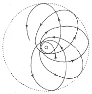

Genel ilişkinlik (relativity) teorisi, bütün KS’ler için geçerli fiziksel yasalar formülleştirmeye çalışmaktadır. Teorinin başlıca problemi, gravitation problemidir. Bu teori, gravitation yasasını yeniden formülleştirmek için Newton’dan beri gösterilmiş ilk ciddi çabadır. Bu yeniden formülleştirme işi gerçekten zorunlu mudur? Newton teorisinin başarılarını, gökbilimin onun gravitation teorisine dayanan büyük ilerlemesini daha önce öğrenmiştik. Newton yasası, bugün de, gökbilimsel hesapların temelidir. Ama eski teoriye yöneltilen itirazları da öğrendik. Newton yasası, yalnız klasik fiziğin süredurumlu KS’lerinde geçerlidir, ve bildiğimiz gibi, süredurumlu KS’lerin ayırıcı özelliği, o KS’lerde mekanik yasalarının geçerli olması zorunluluğudur. İki kütle arasındaki kuvvet, onların birbirinden uzaklığına bağlıdır. Bildiğimiz gibi, kuvvetle uzaklık arasındaki bağlantı, klasik dönüşüme göre değişmezdir. Ama bu yasa özel ilişkinlik (relativity) teorisinin çerçevesine uymaz. Lorentz dönüşümüne göre, uzaklık değişmez değildir. Hareket yasalarında başarı ile yaptığımız gibi, gravitation yasasını da genelleştirmeyi, onu özel ilişkinlik (relativity) teorisine uydurmayı, ya da, başka bir söyleyişle, onu klasik dönüşüme göre değil, Lorentz dönüşümüne göre değişmez olacak biçimde formülleştirmeyi deneyebilirdik. Ama Newton’un gravitation yasası, onu basitleştirmek ve özel ilişkinlik (relativity) teorisinin düzenine uydurmak için gösterdiğimiz bütün çabalara sürekli karşı koydu. Bunu başarsaydık bile, bir adım daha atmak gene de zorunlu olurdu: Özel ilişkinlik (relativity) teorisinin süredurumlu KS’sinden genel ilişkinlik teorisinin keyfi KS’sine geçmek gerekirdi. Öte yandan, düşen yükseleçle yapılan düşünselleştirilmiş deneyler, gravitation problemini çözmeden genel ilişkinlik (relativity) teorisini formülleştirme olanağı bulunmadığını göstermektedir. Gravitation probleminin genel ilişkinlik teorisindeki çözümünün klasik fiziktekinden niçin farklı olacağını ise, düşünüşümüzden anlıyoruz.
Genel ilişkinlik (relativity) teorisine çıkan yolu ve bizi eski görüşlerimizi değiştirmeye zorlayan gerekçeleri göstermeye çalıştık. Teorinin biçimsel sorunlarına girmeden, yeni gravitation teorisinin bazı özelliklerini belirtip onu eski teori ile karşılaştıracağız. Şimdiye dek söylenenlerden sonra, iki teori arasındaki farkların niteliğini kavramak pek güç olmasa gerekir.
1) Genel ilişkinlik (relativity) teorisinin denklemleri her KS’ye uygulanabilir. Özel bir durumda herhangi bir özel KS’yi seçmek, yalnız kolaylık uğruna yapılan bir iştir. Teorik olarak bütün KS’ler uygun bulunabilir. Gravitation’u bir yana bırakmakla kendiliğimizden geriye, özel ilişkinlik (relativity) teorisinin süredurumlu KS’sine döneriz.
2) Newton’un gravitation yasası, bir cismin buradaki ve şimdiki hareketini, çok uzaktaki bir cismin aynı andaki etkisi ile bağlantılar. Bu, bütün mekanik görüşümüze örneklik (modellik) eden yasa idi. Oysa mekanikçi görüş değerden düştü. Maxwell denklemlerinde doğa yasaları için yeni bir örnek (model) bulduk. Maxwell denklemleri, yapı yasalarıdır (structure laws). Bunlar, şimdi ve burada geçen olayları, biraz sonra ve çok yakında geçecek olaylarla bağlantılar. Bunlar, elektromagnetik alanın değişmelerini tanımlayan yasalardır. Kaba taslak söylemek gerekirse şöyle diyebiliriz: Newton’un gravitation yasasından genel ilişkinlik (relativity) teorisine geçiş, elektrik akışkanları teorisinden ve Coulomb yasasından Maxwell teorisine geçişi biraz andırır.
3) Evrenimiz Öklidsel değildir. Evrenimizin geometrik özelliğini, kütleler ve onların hızları belirler. Genel ilişkinlik (relativity) teorisinin denklemleri, evrenimizin geometrik özelliklerini göstermek için yapılmış bir denemedir.
Genel ilişkinlik (relativity) teorisinin programını tutarlı olarak yürütmeyi başardığımızı bir an için kabul edelim. Peki ama, gerçeklikten aşırı uzaklaşıp kendimizi kurguya (speculation’a) kaptırma tehlikesine düşmüyor muyuz? Eski teorinin gökbilimsel gözlemleri ne kadar güzel açıkladığını biliyoruz. Yeni teori ile gözlem arasına bir köprü kurma olanağı var mı? Her kurgu (speculation) deneyle sınanmalıdır, ve her sonuç, ne kadar çarpıcı olursa olsun, olgulara uymuyorsa reddedilmelidir. Yeni gravitation teorisi deneyin sınavından nasıl geçti? Bu soru bir tümceyle yanıtlanabilir: Eski teori, yeni teorinin özel bir sınır durumudur. Gravitational kuvvetler belirli bir ölçüde zayıfsa, eski Newton yasası, yeni gravitation yasasına güzel bir yaklaşım olur. Onun için klasik teoriyi destekleyen bütün gözlemler, genel ilişkinlik (relativity) teorisini de destekler. Daha yüksek bir düzeyde bulunan yeni teoriden, eski teoriyi yeniden elde ederiz. Yeni teoriyi destekleyen hiçbir ek gözlem anılamasaydı, yeni teorinin getirdiği açıklama ancak eski teorininki kadar iyi olsaydı bile, bu iki teori arasında özgür bir seçim yapmak söz konusu olunca, yeni teoriyi üstün tutmamız gerekirdi. Yeni teorinin denklemleri biçimsel bakımdan daha karmaşıktır, ama bu denklemlerin dayandığı varsayımlar, ana ilkeler bakımından, çok daha basittir. İki korkunç sanrı, salt zaman ve süredurumlu sistem ortadan kalkmıştır. Gravitational kütle ile süredurumsal kütlenin eşitliği görmezlikten gelinmemiştir. Gravitational kuvvetler ve onların uzaklığa bağımlılığı konusunda hiçbir varsayım gerekli değildir. Gravitation denklemleri, yapı yasaları biçimindedir. Bu, alan teorisinin büyük başarılarından beri bütün fizik yasaları için gerekli olan biçimdir.
Newton’un gravitation yasasının kapsamadığı bazı yeni sonuçlar yeni gravitation teorisinden çıkarılabilir. Bunlardan biri, ışık ışınlarının bir gravitational alanda eğrilmesi, daha önce söz konusu edilmişti. Öbür iki sonuç şimdi söylenecektir.
Gravitational kuvvetler zayıf olunca eski yasalar yenilerden çıkıyorsa, Newton’un gravitation yasasından sapmalar, yalnız bir dereceye kadar yeğin olan gravitational kuvvetler için beklenebilir. Güneş sistemimizi alalım. Gezegenler ve onlardan biri olan Yer’imiz, Güneş’in çevresinde elipsel yörüngeler boyunca hareket etmektedir. Merkür, Güneş’e en yakın gezegendir. Güneş ile Merkür arasındaki çekim, Güneş ile öbür gezegenler arasındakinden daha kuvvetlidir; çünkü ikisi arasındaki uzaklık daha azdır. Newton yasasından sapma olduğu konusunda bir umut varsa, bu sapma, pek büyük bir olasılıkla Merkür’ün durumunda bulunabilir. Klasik teoriye göre, Merkür’ün çizdiği yörünge, Güneş’in daha yakınından geçmesi sayılmazsa, tıpkı öbür gezegenlerin yörüngeleri gibidir. Genel ilişkinlik (relativity) teorisine göre ise, Merkür’ün hareketi biraz farklı olmalıdır. Güneş’in çevresinde dönen yalnız Merkür değildir, onun çizdiği elips de, Güneş’le bağlantılı KS’ye ilişkin (relative) ve çok yavaş olarak dönmelidir. Elipsin dönüşü, genel ilişkinlik (relativity) teorisinin yeni sonuçlarından birini gösterir. Yeni teori, bu etkinin büyüklüğünü önceden bildirmiştir. Merkür’ün yörüngesi, üç milyon yılda bir dönüşünü tamamlar. [Şekil-69] Etkinin ne kadar az olduğunu, ve Güneş’ten çok daha uzak gezegenlerde bunu saptamaya çalışmanın ne kadar umut kırıcı olduğunu görüyoruz. Merkür’ün hareketinin elips biçiminden saptığı, genel ilişkinlik (relativity) teorisi formülleştirilmeden önce biliniyor, ve buna bir açıklama bulunamıyordu. Öte yandan, genel ilişkinlik (relativity) teorisi, bu özel problem hiç dikkate alınmadan geliştirildi. Güneş’in çevresinde dolanan bir gezegenin çizdiği elipsin dönmesi gerektiği, yeni gravitation denklemlerinden, ancak daha sonraları çıkarılmıştır. Teori, Merkür’ün hareketinin Newton yasasından sapmasını başarı ile açıklamıştır.

[Şekil-69]
Ama genel ilişkinlik (relativity) teorisinden çıkarılmış ve deneyle doğrulanmış başka birçok sonuç daha vardır. Dönen bir diskin büyük çemberi üzerine konan bir saatin ritminin, küçük çember üzerine konan saatinkinden farklı olduğunu görmüştük. Bunun gibi, genel ilişkinlik (relativity) teorisine göre, Güneş’e konmuş bir saatin ritmi, yeryüzüne konmuş bir saatinkinden farklı olmalıdır; çünkü Güneş’teki gravitational alanın etkisi Yer’dekinden çok daha büyüktür.
Daha önce, akkor durumundaki natriyumun belirli bir dalga-boyu olan türdeş (homogeneous) sarı ışık yaydığını söylemiştik (bkz: s. 87). Atom, bu ışımada (radiation), ritimlerinden birini açığa vurur. Atom sanki bir saattir ve yayılan ışığın dalga-boyu onun ritimlerinden biridir. Genel ilişkinlik (relativity) teorisine göre, örneğin Güneş’e konmuş bir natriyum atomunun yaydığı ışığın dalga-boyu, yeryüzündeki natriyum atomunun yaydığı ışığınkinden biraz daha büyük olmalıdır.
Genel ilişkinlik (relativity) teorisinin sonuçlarını deneyle sınama problemi, çapraşık bir problemdir ve elbette kesinlikle çözülmemiştir. Temel düşüncelerle ilgilendiğimiz için, bu sorun üzerinde ayrıntılı olarak durmak istemiyor, ve yalnız şimdiye dek yapılmış gözlemlerin genel ilişkinlik (relativity) teorisinden çıkarılan sonuçları doğrular göründüğünü söylemekle yetiniyoruz.